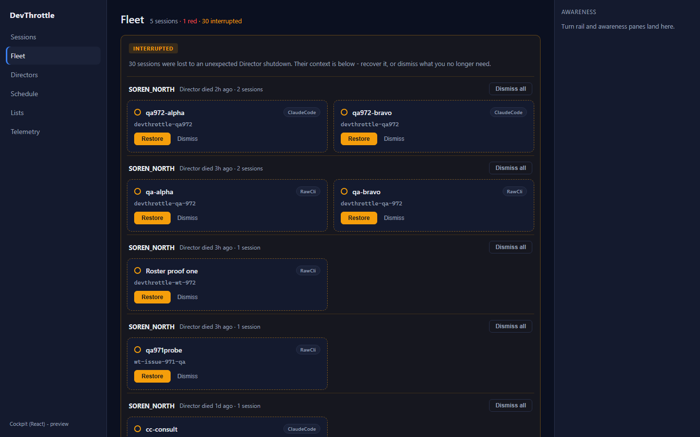
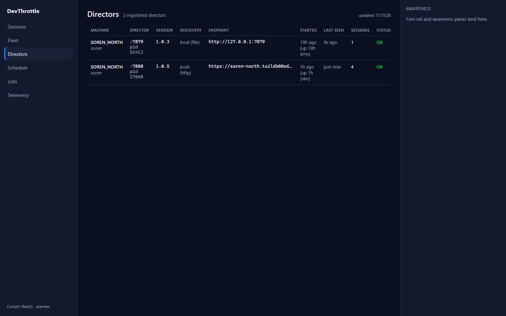
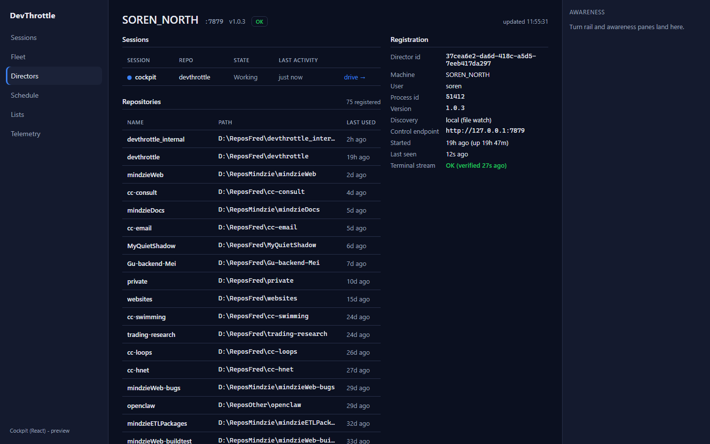
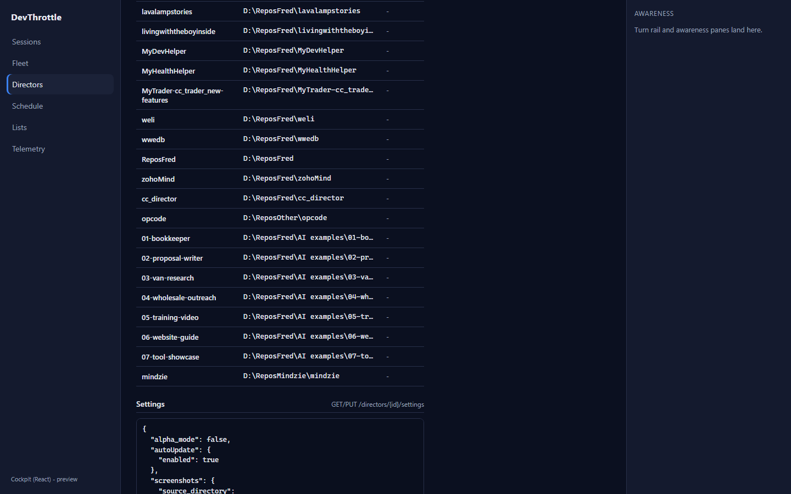
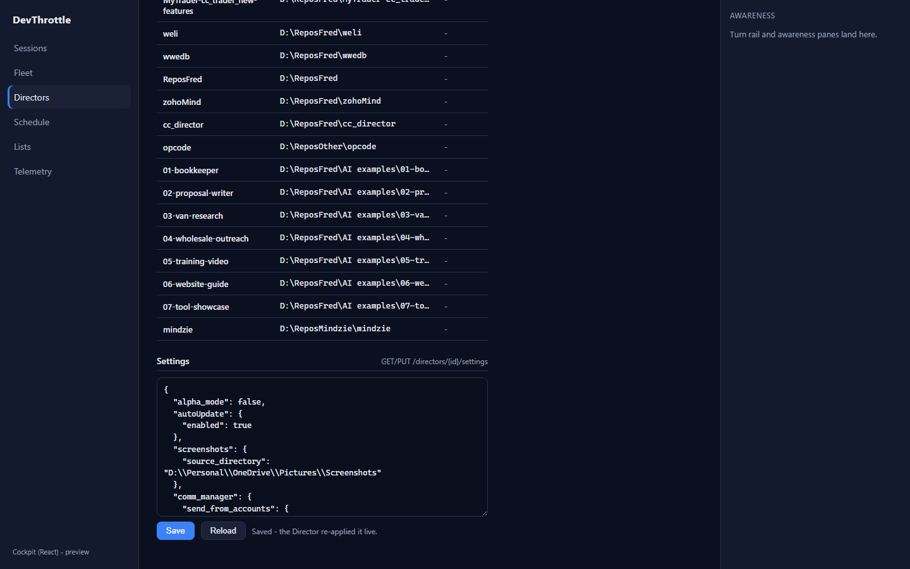

Issue #975 - Cockpit React: port Fleet + Directors + Director detail
Part of epic #967 (rebuild the Cockpit in React). One-to-one port of the Blazor
Fleet.razor, Directors.razor, and DirectorDetail.razor pages
into the apps/cockpit React desktop shell, reading same-origin from the Gateway and
reusing client-core ordering/color helpers.
What was implemented
- Shared fleet client (
packages/client-core/src/fleet/fleetClient.ts) - typed, same-origin, root-relative helpers for the fleet surface:getFleetDirectors(fullDirectorDto),getSessionsEnvelope(GET /sessions?envelope=true= sessions + machineErrors),renameSession(PATCH /sessions/{sid}), the interrupted-session verbs (getInterrupted, dismiss journal / dismiss one / restore), and Director settingsgetDirectorSettings/putDirectorSettings(raw-JSONGET/PUT /directors/{id}/settings, routed by Director id). - Fleet page (
apps/cockpit/src/fleet/FleetView.tsx, route/fleet) - session cards grouped by machine, the one effective status color, inline rename (click name -> Enter/Escape/blur), Open-session deep link, red/yellow/interrupted counts, and the Interrupted sessions recovery panel (grouped by dead Director + pid) with per-card Restore / Dismiss and a group Dismiss all. Roster polls every 2s; interrupted every 15s; a refresh never clobbers an in-progress rename. - Directors page (
apps/cockpit/src/fleet/DirectorsView.tsx, route/directors) - the paged registry table (Machine, Director port/pid, Version, Discovery, Endpoint, Started+uptime, Last seen, live Sessions count, Status) with the unreachable-by-name / unreachable / terminal-stream-down / OK distinction; row click opens the detail page. PortedPagercomponent. - Director detail page (
apps/cockpit/src/fleet/DirectorDetailView.tsx, route/directors/:directorId) - registration facts, health chip, this Director's live sessions, its repositories (slower 30s cadence), and a Director settings editor (raw-JSON load + save round-trip, routed by Director id) - the read/write surface the Blazor Cockpit exposed as a modal. - Wiring: routes added in
main.tsx, a "Directors" nav item inAppShell.tsx, the theme-token stylesheetfleet/fleet.css, and/interruptedadded to the dev-server proxy invite.config.ts.
Acceptance criteria - met with proof
| Criterion | How it is met | Proof |
|---|---|---|
| Fleet renders the same information and actions as the Blazor page. | Machine-grouped cards, effective color dots, agent badges, repo, state + idle, inline rename, Open session, and the full Interrupted recovery panel (Restore / Dismiss / Dismiss all). | fleet.png - live: 5 sessions, 1 red, 30 interrupted. |
| Directors list renders real Directors. | Paged table over GET /directors enriched with live session counts and status
from the roster envelope. |
directors.png - live: 2 registered Directors (:7879 local/file, :7880 push/http),
session counts 1 + 4, OK status. |
| Director detail opens. | Registration facts, health, sessions, and repositories for the selected Director id. | director-detail.png - live: MACHINE-A :7879 v1.0.3, 75 repos, terminal stream
verified. |
| Director settings read/write round-trips (routed by Director id through the Gateway). | Load reads GET /directors/{id}/settings and pretty-prints; Save validates the
JSON and writes PUT /directors/{id}/settings; the Director re-applies live. |
director-settings-loaded.png + director-settings-saved.png - live
load (5347 chars) and "Saved - the Director re-applied it live." |
| No absolute URLs in the client (lint rule passes). | Every request is root-relative through client-core; the dev proxy target is read
from the environment, never hard-coded. |
npm run lint exit 0 (see Build gate). |
| The Blazor paths can flip to React with no loss of function. | Same endpoints, same ordering/color policy (reused from client-core/sessions/ordering),
same actions; the React pages coexist under /c alongside Blazor. |
All screenshots below. |
Build gate (all clean)
npm run build --workspace @devthrottle/cockpit(tsc --noEmit + vite build): PASSnpm run lint(Gateway-only-ingress rule, no absolute URLs): PASS (exit 0)dotnet build src/CcDirector.Gateway/CcDirector.Gateway.csproj -p:RunCockpitBuild=true -c Release(builds + stages the React Cockpit): Build succeeded, 0 Warning(s), 0 Error(s)dotnet build cc-director.sln: Build succeeded, 0 Warning(s), 0 Error(s)
Note: the workspace-wide npm run typecheck reports a pre-existing failure in
packages/client-core/src/awareness/awarenessClient.test.ts (a #974 test file this issue
does not touch); it is unrelated to this change and reproduces on pristine origin/main.
How this was proven (live)
Driven against the real running Gateway (127.0.0.1:7878) with two live
Directors registered on machine MACHINE-A, via the Vite dev server
(COCKPIT_PROXY_TARGET=http://127.0.0.1:7878) and Playwright. Every screenshot is real
fleet data, not a mock.
Screenshots





CenCon impact
No architecture or security drift. This is a client-side port over the existing Gateway REST surface; no new endpoints, no new server logic, no change to any blocking security rule. The Gateway-only-ingress invariant is preserved (all requests root-relative, enforced by the lint rule).